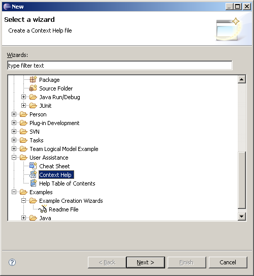
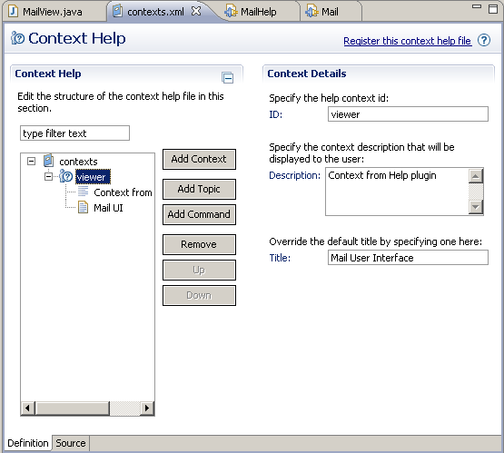
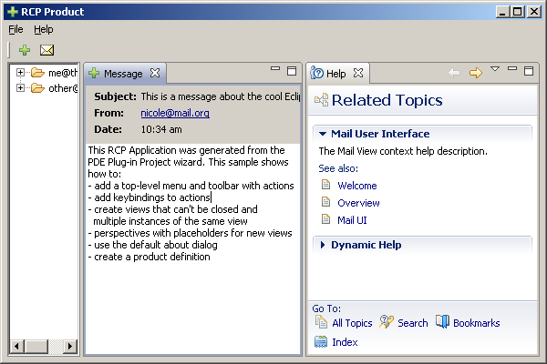

Context help information is provided when context-sensitive help is requested by the user by pressing F1 when a specific widget is active. Adding context sensitive help to a product is a multi-step process that can be a bit confusing the first time. Assuming we have two separate plug-ins: product and help, the steps required are:
In the product plug-in:
1. Modify the UI classes to add a help context id for a given control.
In the help plug-in:
1. Create a contexts XML file using the User Assistance wizard page and populate it with some help documentation.
2. Modify plugin.xml to add the org.eclipse.help.contexts extension point for the context file above.
The first step is to set a help context id on the UI controls. For example, the fragment below adds the context id Mail.viewer to the Mail view of the Mail template of the previous section.
public class MailView extends ViewPart {
public static final String ID = "Mail.view";
private Composite top;
public void createPartControl(Composite parent) {
top = new Composite(parent, SWT.NONE);
...
PlatformUI.getWorkbench().getHelpSystem().setHelp(top, "Mail.viewer");
...
}
public void setFocus() {
if (top != null)
top.setFocus();
}
}
Tip The help context ID of the view above should include the Plug-in ID and a string identifier. A context IDs is uniquely identified by pluginID.contextID in memory.
The structure of a context file is shown in the next fragment. The id attribute is passed by the platform to the help system to identify the currently active context. The IDs in the manifest file must not contain the period character, since the IDs are uniquely identified by pluginID.contextID.
<?xml version="1.0" encoding="UTF-8"?>
<contexts>
<context id="viewer" title="Mail User Interface">
<description>Context from Help plugin</description>
<topic href="html/gettingstarted/subtopic2.html" label="Mail UI"/>
</context>
</contexts>
Add a contexts file to the help plug-in by clicking File > New > Other and selecting Context Help from the User Assistance wizard page as shown in figure 6.7. Eclipse provides a powerful editor for context files shown if figure 6.8.

Figure 6.7: User Assistance wizard page for help context files.

Figure 6.8: Help contexts PDE editor.
The final step is to add the extension point org.eclipse.help.contexts to the help plug-in. In the fragment below, the file attribute defines the name of the manifest file which contains the context-sensitive help for this plug-in. The plugin attribute defines the plug-in ID to which its context definitions are extended with extra information. In this case the MailHelp plug-in will contribute context to the Mail plug-in.
<extension
point="org.eclipse.help.contexts">
<contexts
file="contexts.xml"
plugin="Mail">
</contexts>
</extension>
The final result can be seen in figure 6.9. When the user presses F1 and the mail view is active the context help for the view will be displayed.

Figure 6.9: Mail template showing context sensitive help.